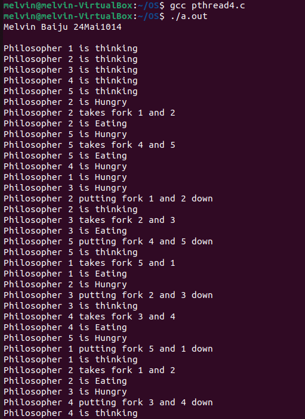

Overview
The Dining Philosophers Problem is a classic synchronization problem in computer science that illustrates the challenges of managing shared resources among multiple concurrent processes. Here's an overview of the problem and its significance:
Scenario
- Philosophers: Imagine five philosophers sitting around a circular table. Each philosopher alternates between thinking and eating.
- Chopsticks: There are five chopsticks placed between the philosophers. To eat, a philosopher needs to pick up both the chopsticks adjacent to them (one on their left and one on their right).
Synchronization Problem
- Resource Contention: Each philosopher needs two chopsticks to eat, but only one chopstick can be picked up at a time. This creates a situation where philosophers might compete for the same chopsticks.
- Deadlock: If each philosopher picks up the chopstick on their right simultaneously, all philosophers will hold one chopstick and will be unable to pick up the second chopstick. This leads to a deadlock where no philosopher can eat.
- Starvation: Even if deadlock is avoided, a philosopher might starve if they are unable to acquire both chopsticks while others continue to eat.
Solutions
Several strategies can be used to solve the Dining Philosophers Problem and avoid deadlock and starvation:
- Arbitrator Solution: Introduce a waiter (arbitrator) who grants permission to pick up the chopsticks. A philosopher must ask the waiter for permission before picking up the chopsticks.
- Chopstick Limitation: Ensure that only four philosophers are allowed to pick up chopsticks at any one time, guaranteeing that at least one philosopher can always eat and thereby preventing deadlock.
- Odd/Even Philosopher Strategy: Philosophers are divided into two groups. Odd-numbered philosophers pick up the chopstick on their left first, then the one on their right. Even-numbered philosophers do the opposite. This helps to avoid circular waiting.
- Hierarchical Ordering: Assign a unique number to each chopstick. Philosophers always pick up the lower-numbered chopstick first, then the higher-numbered one. This ensures a consistent order and prevents circular waiting.
Dining Philosopher PseudoCode(using semaphores)
semaphore chopsticks[5] = {1, 1, 1, 1, 1}; // Semaphores for each chopstick
Philosopher(int i) {
while (true) {
think();
wait(chopsticks[i]); // Pick up left chopstick
wait(chopsticks[(i + 1) % 5]); // Pick up right chopstick
eat();
signal(chopsticks[i]); // Put down left chopstick
signal(chopsticks[(i + 1) % 5]); // Put down right chopstick
}
}
Dining Philosopher Code
#include <stdio.h>
#include <limits.h>
#include <semaphore.h>
#include <pthread.h>
#include <unistd.h> // Include this header for sleep function
#define N 5
#define THINKING 0
#define HUNGRY 1
#define EATING 2
#define LEFT (ph_num + 4) % N
#define RIGHT (ph_num + 1) % N
#define ITERATIONS 10 // Define the number of iterations
sem_t mutex;
sem_t S[N];
void* philosopher(void* num);
void take_fork(int ph_num);
void put_fork(int ph_num);
void test(int ph_num);
int state[N];
int phil_num[N] = {0, 1, 2, 3, 4};
int main() {
int i;
pthread_t thread_id[N];
printf("Melvin Baiju 24Mai1014 \n");
sem_init(&mutex, 0, 1);
for (i = 0; i < N; i++)
sem_init(&S[i], 0, 0);
for (i = 0; i < N; i++) {
pthread_create(&thread_id[i], NULL, philosopher, &phil_num[i]);
printf("\nPhilosopher %d is thinking", i + 1);
}
for (i = 0; i < N; i++)
pthread_join(thread_id[i], NULL);
}
void* philosopher(void* num) {
int* i = num;
for (int j = 0; j < ITERATIONS; j++) {
sleep(1);
take_fork(*i);
sleep(1);
put_fork(*i);
}
return NULL;
}
void take_fork(int ph_num) {
sem_wait(&mutex);
state[ph_num] = HUNGRY;
printf("\nPhilosopher %d is Hungry", ph_num + 1);
test(ph_num);
sem_post(&mutex);
sem_wait(&S[ph_num]);
sleep(1);
}
void test(int ph_num) {
if (state[ph_num] == HUNGRY && state[LEFT] != EATING && state[RIGHT] != EATING) {
state[ph_num] = EATING;
sleep(2);
printf("\nPhilosopher %d takes fork %d and %d", ph_num + 1, LEFT + 1, ph_num + 1);
printf("\nPhilosopher %d is Eating", ph_num + 1);
sem_post(&S[ph_num]);
}
}
void put_fork(int ph_num) {
sem_wait(&mutex);
state[ph_num] = THINKING;
printf("\nPhilosopher %d putting fork %d and %d down", ph_num + 1, LEFT + 1, ph_num + 1);
printf("\nPhilosopher %d is thinking", ph_num + 1);
test(LEFT);
test(RIGHT);
sem_post(&mutex);
}
Sample Input
Number of Philosophers: 5
Number of Chopsticks: 5
Philosophers' Actions: Each philosopher alternates between thinking and attempting to eat.
Philosopher Actions:
Philosopher 0 picks up chopstick 0 (left) and chopstick 1 (right).
Philosopher 1 picks up chopstick 1 (left) and chopstick 2 (right).
Philosopher 2 picks up chopstick 2 (left) and chopstick 3 (right).
Philosopher 3 picks up chopstick 3 (left) and chopstick 4 (right).
Philosopher 4 picks up chopstick 4 (left) and chopstick 0 (right).
Sample Sequence:
All philosophers start by thinking.
Philosopher 0 tries to pick up chopstick 0 and then chopstick 1.
Philosopher 1 tries to pick up chopstick 1 and then chopstick 2.
Philosopher 2 tries to pick up chopstick 2 and then chopstick 3.
Philosopher 3 tries to pick up chopstick 3 and then chopstick 4.
Philosopher 4 tries to pick up chopstick 4 and then chopstick 0.
Sample Output
